Repaso de la Tanda HOY2
El nuevo HOY, parte 2: HOY completa (orden de los bloques, avisos con X, «Tu día» sin horas, «Por llegar» con foto, día acabado, llegada, último día, sin pase), [Cambiar plan] con sus 5 opciones y propuestas (retraso, saltar, pasar a otro día, añadir), quiero comer ahora, «¿Qué hacemos con…?», la entrada en peligro y la lluvia. Todo en tu viaje de Lanzarote (martes 10 y domingo 8). Lanzarote sigue OCULTO (solo administrador).
✅ Hecho — Orden de los bloques: cabecera, avisos, tarjeta principal, «Cerca de ti», «Tu día», «Si te sobra tiempo»Dónde: HOY el martes 10 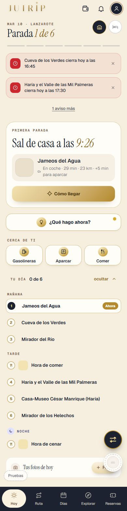
✅ Hecho — Avisos con su X, máximo 2 a la vista y «N avisos más»; «Sin conexión» como línea fina encimaDónde: HOY con lluvia, nubes y viento a la vez 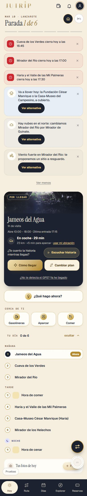
✅ Hecho — «Tu día» sin horas, por Mañana · Tarde · Noche (solo llevan hora las reservas y el atardecer)Dónde: HOY › Tu día 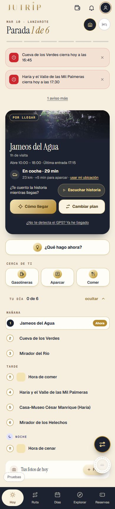
✅ Hecho — «Por llegar» con la foto del lugar y sin mapaDónde: HOY al ir hacia una parada ✅ Hecho — «Ya estás aquí» con todos los botonesDónde: HOY al llegar 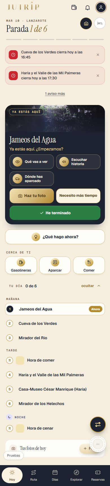
✅ Hecho — Al tocar la tarjeta se abre la ficha completa de DÍAS (Resumen, Entradas, Tips, Logros)Dónde: HOY › tocar la tarjeta 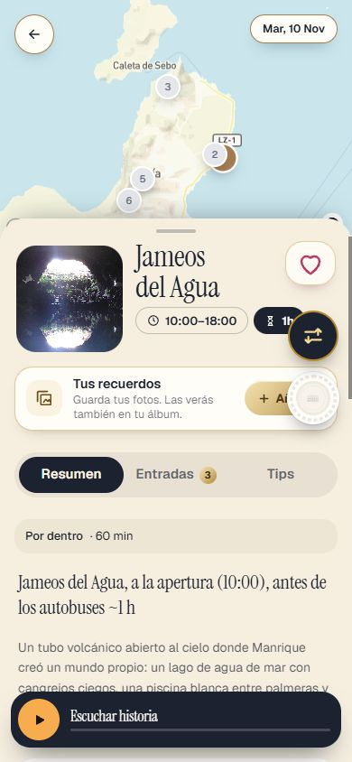
⚠️ A medias / lo miras tú — Atardecer: tarjeta naranja y debajo la tarjeta de la parada con [He terminado]En Design es solo la naranja; se deja la parada para no perder [He terminado]. Dime si prefieres la naranja sola. Dónde: HOY al atardecer 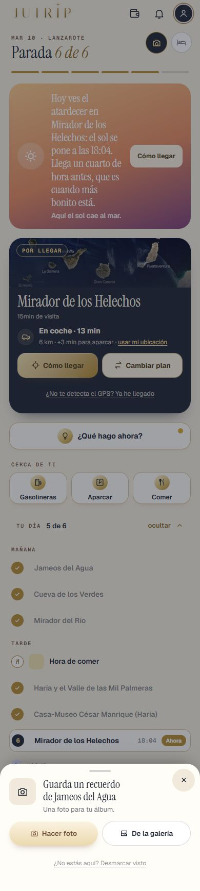
✅ Hecho — Día acabado: «Hasta aquí, hoy» y «Mañana, miércoles 11 · …» (solo cuando no queda ninguna parada)Dónde: HOY al acabar el día 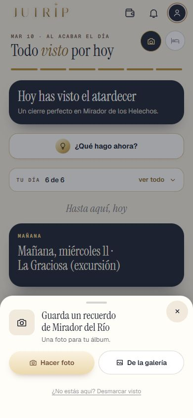
✅ Hecho — Día de llegada: «Bienvenido a Lanzarote», «Empiezas hacia las HH:MM» y [Cómo llegar al coche de alquiler]Dónde: HOY el domingo 8 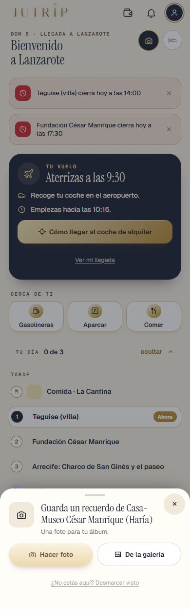
✅ Hecho — Último día: «Hoy vuelves a casa» con [Cómo llegar al aeropuerto]Debajo sale también la siguiente parada, para poder marcar «visto». Dónde: HOY el viernes 13 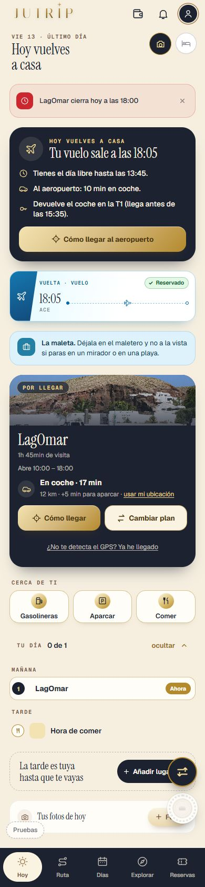
✅ Hecho — «Si te sobra tiempo» abajo del todo, plegada, con [Recuperar] y [Pasar a otro día]Estos dos botones usan las acciones de siempre, sin vista previa. Dónde: HOY › abajo del todo 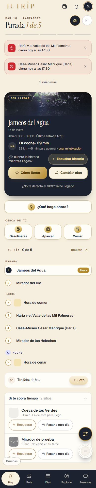
✅ Hecho — Roma: por llegar y llegada sin cocheDónde: HOY en Roma 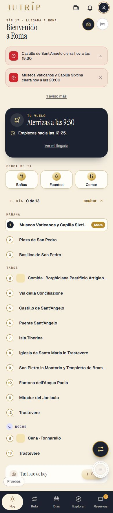
✅ Hecho — Sin pase: la lista nueva de lo que trae HOY (no la pantalla con candados)Dónde: HOY en el viaje sin pase 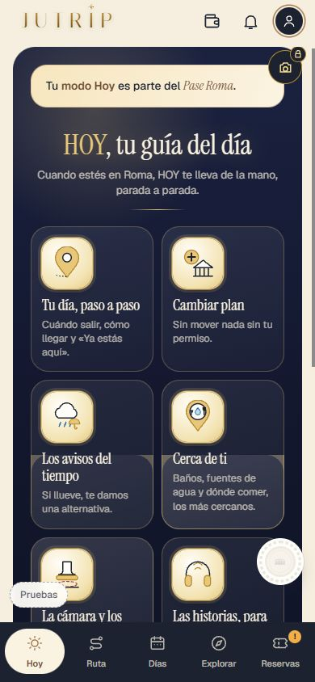
✅ Hecho — Día de prueba: HOY entero sin un solo candado y con X en su franjaDónde: HOY el día de prueba 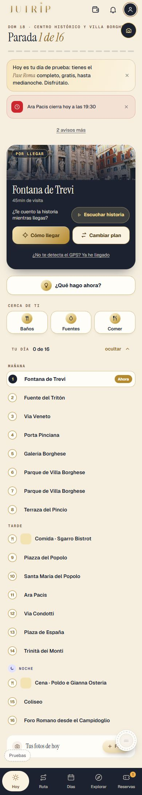
✅ Hecho — [Cambiar plan] en lugar de [No me da tiempo], con la hoja de 5 opcionesDónde: HOY › tarjeta de la parada 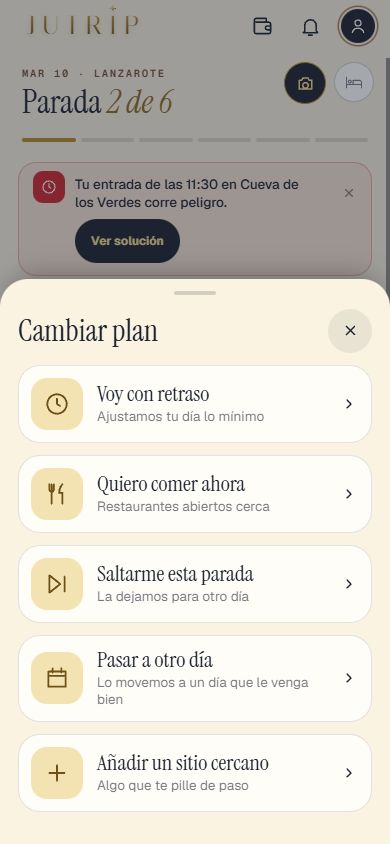
✅ Hecho — Voy con retraso: sin minutos, con Cambia / Se mantiene / Aplicar / Ver otra opción / Volver a mi ruta originalDónde: HOY › Cambiar plan › Voy con retraso 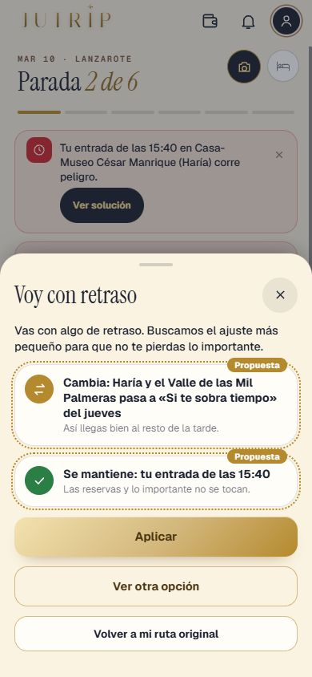
✅ Hecho — «Plan actualizado · Deshacer» tras aplicar cualquier propuestaDónde: HOY tras [Aplicar] 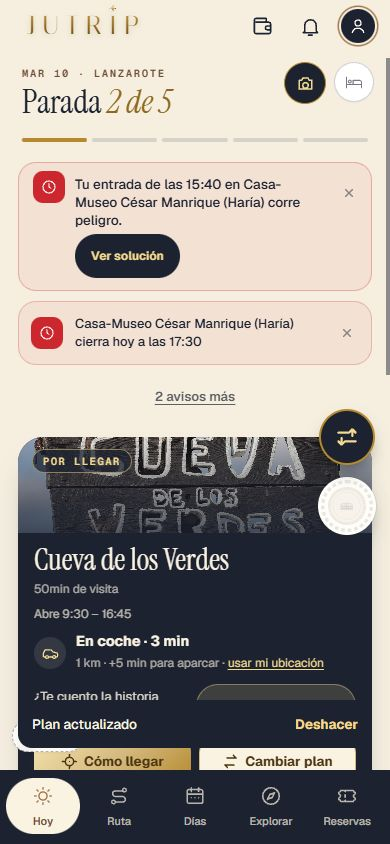
✅ Hecho — Saltarme esta parada, con aviso si hay entradaDónde: HOY › Cambiar plan › Saltarme 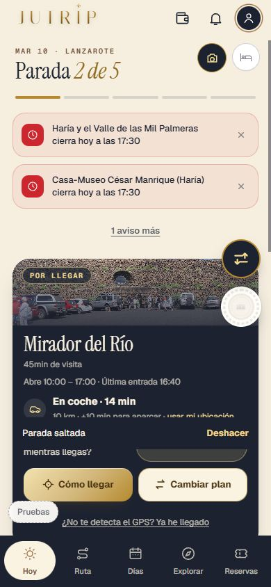
✅ Hecho — Pasar a otro día en sus 3 casos (cabe / cabe quitando algo / no cabe)Capturas 26a, 26b y 26c. [Ver otra opción] no sale si solo hay una propuesta. Dónde: HOY › Cambiar plan › Pasar a otro día 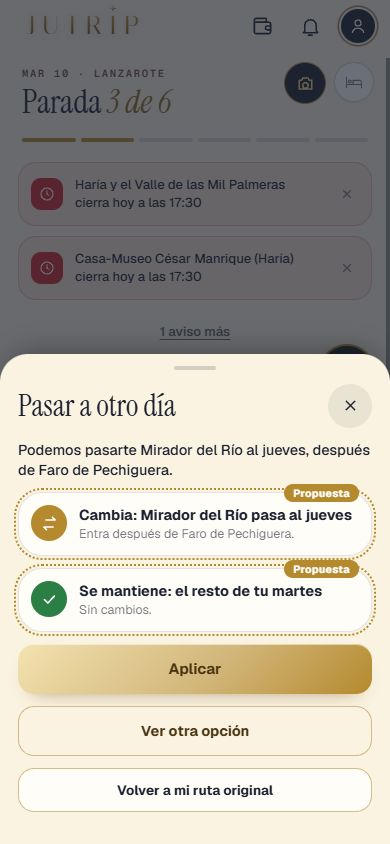
✅ Hecho — Añadir un sitio cercano: los de logro primero; «encaja» o «hay que mover algo»Capturas 27lista, 27a y 27b. Dónde: HOY › Cambiar plan › Añadir 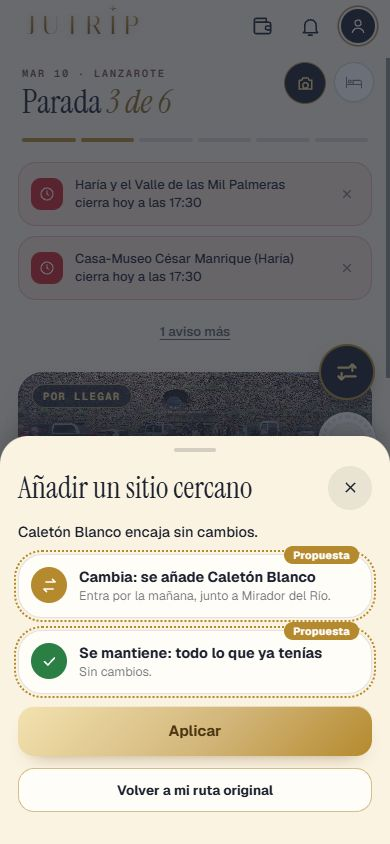
✅ Hecho — Quiero comer ahora: solo restaurantes abiertos, el más cercano primero, [Ir aquí] = propuestaSolo salen restaurantes con horario confirmado y coordenadas (en Lanzarote 18 de 50). Dónde: HOY › Cambiar plan › Quiero comer ahora 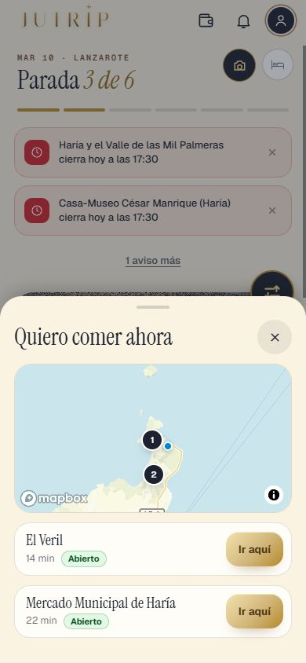
✅ Hecho — A la hora de comer: «Tu restaurante está a N minutos» [Cómo llegar] [Cambiar]La tarjeta de comida sustituye a la de la parada; se vuelve con «Ya he comido · seguir con el plan». Dónde: HOY a mediodía 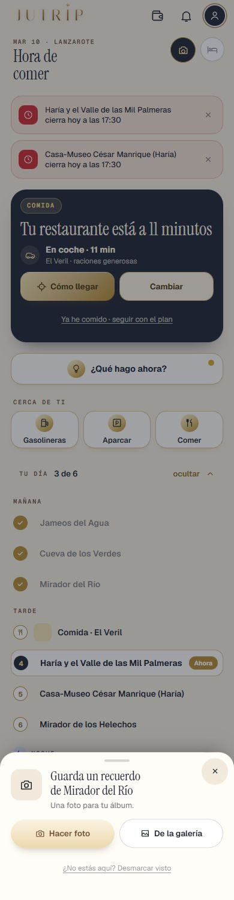
✅ Hecho — «¿Qué hacemos con…?» una sola vez con sus 3 botonesDónde: HOY al alejarte de una parada sin marcarla 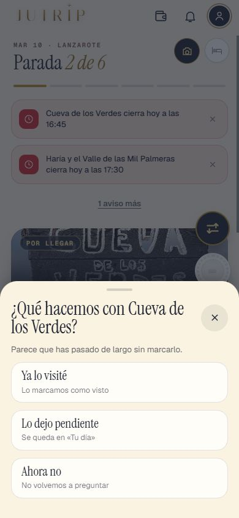
✅ Hecho — «Tu entrada de las 11:30… corre peligro» arriba, con X y [Ver solución]; la solución no mueve la reservaSolución en hoy2_peligro_29b_solucion.jpg. Dónde: HOY con retraso grande 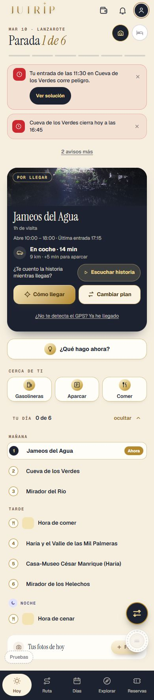
✅ Hecho — Lluvia: [Ver alternativa] → «Plan de lluvia»; al parar, «¿Volvemos al plan?»Capturas 32, 32b. En Roma, «Si llueve» con el mismo formato. Dónde: HOY con lluvia 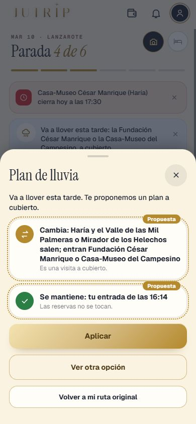
⚠️ A medias / lo miras tú — Nubes y viento (31) con su alternativaProbado en nubes; el viento solo por código y prueba, sin captura. Dónde: HOY con nubes o viento ✅ Hecho — Pruebas de la tanda: HOY2_A 85, HOY2_B 128, HOY2_C 132, todas con 0 fallosDónde: No es de móvil Todas las capturas hoy2_cambiar_22 hoy2_cambiar_23 hoy2_cambiar_25 hoy2_cambiar_26a 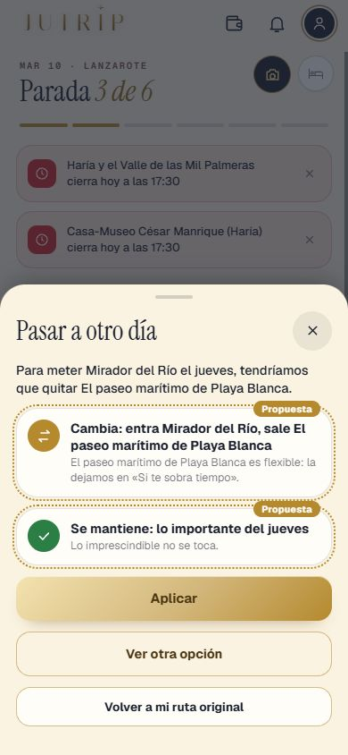
hoy2_cambiar_26b 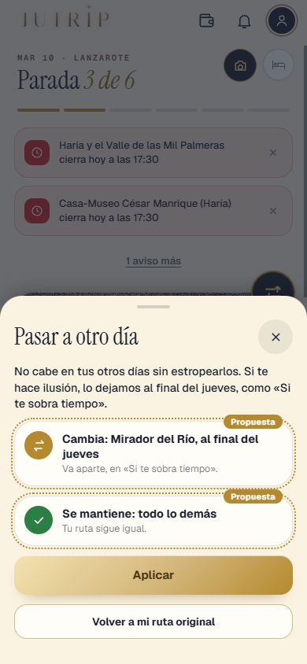
hoy2_cambiar_26c hoy2_cambiar_27a 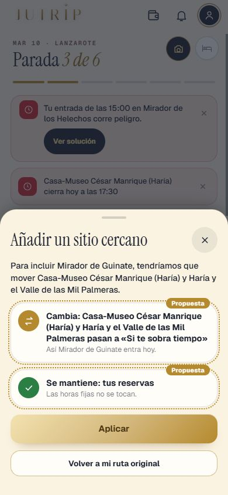
hoy2_cambiar_27b 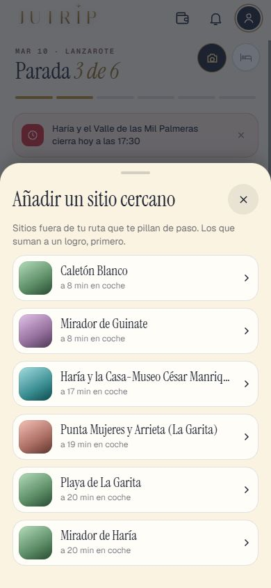
hoy2_cambiar_27lista hoy2_cambiar_30 hoy2_comer_24_lista 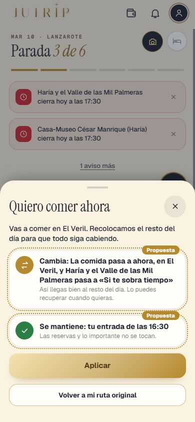
hoy2_comer_24_propuesta hoy2_comer_c4_hora_de_comer hoy2_completa_01_lz_martes10_por_la_manana hoy2_completa_02_lz_martes10_por_llegar hoy2_completa_03_lz_martes10_ya_estas_aqui hoy2_completa_04_lz_ficha_completa hoy2_completa_05_lz_martes10_avisos_tiempo hoy2_completa_06_lz_martes10_atardecer hoy2_completa_07_lz_martes10_dia_acabado hoy2_completa_08_lz_domingo8_llegada hoy2_completa_09_lz_ultimo_dia hoy2_completa_10_lz_sobra_tiempo_abierta 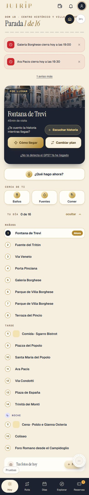
hoy2_completa_11_roma_por_llegar hoy2_completa_12_roma_llegada hoy2_completa_13_sin_pase_lista hoy2_completa_14_dia_de_prueba 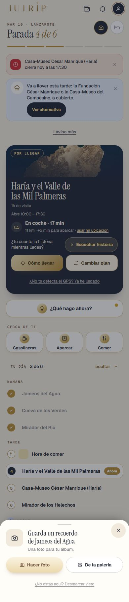
hoy2_lluvia_32_aviso hoy2_lluvia_32_plan 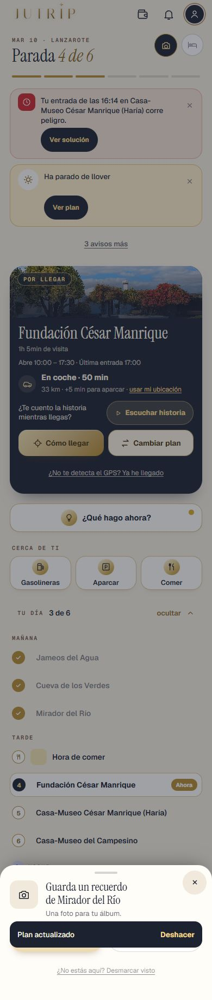
hoy2_lluvia_32b_ha_parado 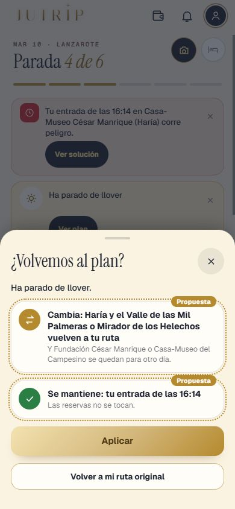
hoy2_lluvia_32b_volvemos hoy2_parada_28_que_hacemos hoy2_peligro_29_aviso 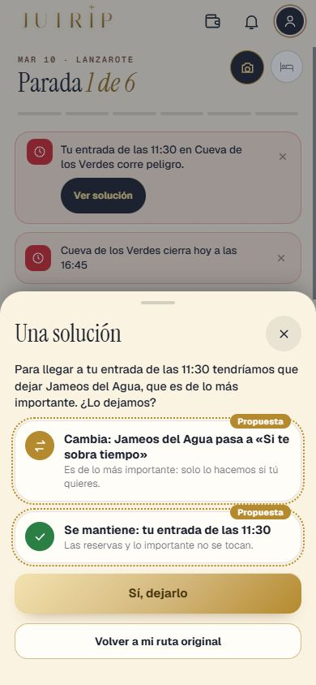
hoy2_peligro_29b_solucion